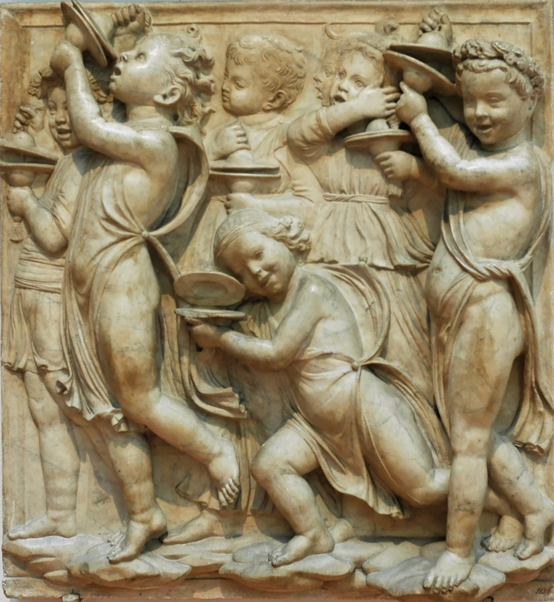

Psalm 150 — The Mister Translation

Psalm 150:5. One of the panels that illustrate Psalm 150 on the singers’ gallery made for the cathedral organ in Florence, with its other panels of boys singing and playing the timbrel. The psalm’s own words are ‘cymbals of hearing’ and ‘cymbals of the shout’; the relief shows the shout.

Translator's Notes — verse by verse
⭐ “Hallelujah”. The word is two Hebrew words joined by a hyphen, hallelu-Yah: the plural command “praise” and Yah, the short form of the divine name. It opens this psalm and closes it, and the same is true of each of the five psalms from 146 to 150: the first line and the last line of every one of them is hallelu-Yah. The Psalter does not end on a prayer or a promise; it ends on five psalms made of the one command and the reasons for it. Psalms 146–149 are yet to come in this translation. This translation prints the fused word, “Hallelujah”, where it stands as a call at the head and the foot, and “Jah” in verse 6, where it is the object of the sentence. The KJV has “Praise ye the Lord”, the ASV “Praise ye Jehovah”, the NIV “Praise the Lord”, the TLB “Hallelujah! Yes, praise the Lord!”, and the NWT 1984 “Praise Jah, YOU people!” The Greek Psalter keeps Allēlouia at the head of verse 1 and ends verse 6 without it: pasa pnoē ainesatō ton Kyrion, “let every breath praise the Lord”. The Douay follows the Latin, which runs verses 5 and 6 together and puts “Alleluia” at the end, so it has five verses where the Hebrew has six.
⚠ “In his sanctuary… in the vault of his strength”. The first command names God as El and the last names him as Yah, and the psalm never writes the four-letter name at all. Be-qodsho is “in his holiness”, and the Hebrew does not say what place is meant. Radak takes it for the world of the angels and “the vault of his strength” for the outermost heaven that encloses everything, where God’s strength is seen. Ibn Ezra gives the two readings he has received: Rabbi Moses reads both phrases as the heavens, citing “his strength is in the skies” (Psalm 68:35); Rabbi Judah Halevi reads the first as the inner room of the temple and the second as the ark, so that the poet is speaking with the Levites, who sing with harps and every kind of tune. The word for “vault”, raqia, is the one God makes on the second day (Genesis 1:6, now on these pages; dictionary), and the translation keeps the same word for it. The KJV and the ASV have “in the firmament of his power”, the NIV “in his mighty heavens”, the NWT 1984 “in the expanse of his strength”, and the TLB “in the heavens he made with mighty power”. The NWT 1984 also has “in his holy place”, where the KJV has “in his sanctuary”.
⭐ “Praise him for his mighty acts”. Gevurot are acts of strength, and Ibn Ezra reads the verb with them as telling: “praise him”, he says, means “recount them”, the same as sapar in Psalm 22:23 (dictionary, now on these pages). Radak hears the command as addressed to Israel, and “the abundance of his greatness” as the greatness God gained among the nations when he redeemed them. Ibn Ezra takes it as a measure: praise him much, since his greatness is great. The NWT 1984 has “the abundance of his greatness”, the KJV and the ASV “his excellent greatness”, the NIV “his surpassing greatness”, the TLB “his unequaled greatness”, and the Douay “the multitude of his greatness”.
⚠ Seven instruments and a dance. Counting the two cymbals as one, the psalm names seven instruments: the ram’s horn (shofar), the harp (nevel), the lyre (kinnor), the timbrel (tof), the strings (minnim), the pipe (ugav) and the cymbals, and the dance between the timbrel and the strings. The translation keeps each word one thing, as at 1 Samuel 10:5, “harp and tambourine and flute and lyre” (now on these pages). The shelf blurs several of them. For verse 3 the KJV has “the sound of the trumpet”, the NIV “the sounding of the trumpet”, and the NWT 1984 “the blowing of the horn”; only the NWT keeps the animal’s horn. For the pair of strings the KJV has “the psaltery and harp”, the NIV “the harp and lyre”, the TLB “lute and harp”, the Geneva “the viol and the harp”, and the NWT 1984 “the stringed instrument and the harp”. Ibn Ezra adds only that the nevel has ten holes.
⭐ Timbrel and dance. Miriam is the other player of the timbrel, and the women who follow her go out “with timbrels and dances” (Exodus 15:20, now on these pages), so the first song of Israel after the sea and the last psalm share the instrument and the dance. The NIV has “timbrel and dancing”, the TLB “the drums and dancing”, and the NWT 1984 “the tambourine and the circle dance”. The Geneva has “timbrel and flute”, taking the second word for a pipe, and the Douay “timbrel and choir”, which follows the Greek tympanō kai chorō, “timbrel and choir-dance”. The next pair is “strings and pipe”. Ugav is the pipe of Jubal, the father of “all who play the lyre and the pipe” (Genesis 4:21, now on these pages), so the strings and the pipe at the middle of the psalm are the two instruments the Bible names first. The Geneva and the Douay both have “organs”, from the Greek organō, “instrument”, and the NWT 1984 and the NIV have “pipe”. Radak says the minnim and the ugav are instruments of music whose sound is not known to us; Ibn Ezra says the strings are many instruments and one tune.
⭐ “Cymbals of hearing… cymbals of the shout”. The word tsiltsele, “cymbals of”, stands in two verses of the Hebrew Bible, both in this psalm and in David’s procession, where the house of Israel plays before Jehovah “with rattles and with cymbals” (2 Samuel 6:5, now on these pages, in the plural tselatsilim; dictionary). The Hebrew gives each cymbal a quality and no verb: tsiltsele shama, “cymbals of hearing”, and tsiltsele teruah, “cymbals of the shout”, and teruah is the word for a battle cry and a blast (dictionary). The KJV has “the loud cymbals” and “the high sounding cymbals”, the NIV “the clash of cymbals” and “resounding cymbals”, the NWT 1984 “the cymbals of melodious sound” and “the clashing cymbals”, and the TLB “loud clanging cymbals”. The Douay has “cymbals of joy”, after the Latin; the Greek has kymbalois euēchois and kymbalois alalagmou, “cymbals of good sound” and “cymbals of shouting”. Radak says these are the cymbals that make a great sound, as Chronicles has them, “to make themselves heard” (1 Chronicles 15:19). Ibn Ezra says there is no way to know which instruments these were, because the land of Ishmael has many instruments of song that the men of Edom never saw, and Edom has instruments the sages of Ishmael never heard.
⭐ “Let everything that breathes”. “All that breathes”, kol ha-neshamah with the article, stands in two verses of the Hebrew Bible: here, and Joshua 10:40, where Joshua strikes the land and “everything that breathed he devoted to destruction” (now on these pages). The same two words end the book of praises and describe the ban. Neshamah is the breath God blows into the first man (Genesis 2:7) and the breath that fails in everything on dry land at the flood (Genesis 7:22, both now on these pages); see neshamah. The verb, tehalel, is singular, so each breath praises, one by one. The KJV has “Let every thing that hath breath praise the Lord”, the ASV “Let everything that hath breath praise Jehovah”, the NIV “Let everything that has breath praise the Lord”, the TLB “Let everything alive give praises to the Lord!”, and the NWT 1984 “Every breathing thing—let it praise Jah.” The Douay has “let every spirit praise the Lord”, following the Latin spiritus; the Greek has pasa pnoē, “every breath”.
⚠ Radak’s thirteen. Radak opens his comment on the psalm by saying that it contains thirteen praises, a hint at the thirteen attributes of God (Exodus 34:6–7, now on these pages). I count the same on the Hebrew by hand: hallelu-Yah and hallelu-El and nine times hallelu-hu, “praise him”, in verses 1–5, then tehalel and hallelu-Yah in verse 6, thirteen in all. The nine “praise him” are the plain command, over and over, with a different instrument each time, until the last line gives up the instruments and asks for the breath. Radak reads that last line as the highest praise of all: the praise of the soul, which understands God’s work and knowledge as far as a soul can while it is still in the body. Ibn Ezra gives two more readings: that the musician ends on the breath because a tune is shaped by the length of the breath, and that Rabbi Solomon the Spaniard saw in it the soul above, the one in heaven.
⭐ The end of the book. The Hebrew name of the book, Tehillim, is built on the same root as the word that closes it. The Psalter is in five books, and the first four close on a line of blessing and “Amen”: Psalms 41:14, 72:19, 89:53 and 106:48 (none of them translated here yet). Psalm 150 is the closing line of the fifth, and Psalms 146–150 together are commonly read as the doxology the whole collection ends on. The Hebrew word comes into the New Testament as Allēlouia, which stands only in Revelation 19 (now on these pages). Ibn Ezra, who ends his commentary on the Psalms at this verse, signs it with his own name, “Abraham son of Meir”, and a line that I read as: the praises of God are never finished, and who is it that began them and finished them all?
Patterns worth carrying forward
Where this translation keeps the words exact and distinct: “Hallelujah” for the fused hallelu-Yah at the head and foot, and “Jah” where it is the object, as in Joshua 10 and Isaiah 26:4; “Praise him” for every hallelu-hu, nine times, with no variation; “vault” for raqia, as at Genesis 1:6; “strength” for oz; “mighty acts”; “the ram’s horn” for shofar; “harp” for nevel and “lyre” for kinnor, as at 1 Samuel 10:5; “timbrel”, as at Exodus 15:20; “dance”; “strings” and “pipe”, as at Genesis 4:21; “cymbals of hearing” and “cymbals of the shout”, one adjective each and no verb; and “everything that breathes”, as at Joshua 10:40. The Hebrew has no written and read pairs in this psalm.
Echoes paid. The vault of Genesis 1:6; the breath of Genesis 2:7 and 7:22; Jubal’s lyre and pipe (Genesis 4:21); Miriam’s timbrel and the women’s dances (Exodus 15:20); the thirteen attributes (Exodus 34:6–7); the harp, tambourine, flute and lyre of the prophets at Gibeah (1 Samuel 10:5); the rattles and cymbals of David’s procession (2 Samuel 6:5); the breath devoted to destruction (Joshua 10:40); “I will recount your name” (Psalm 22:23); “in Yah, Jehovah” (Isaiah 26:4); and the Hallelujahs of heaven (Revelation 19).
Echoes planted. The four other Hallelujah psalms at the end of the book, 146–149, and Psalm 148, where “praise him” is the command in each of the first four verses; the timbrel, dance and lyre again at Psalm 149:3; “his strength is in the skies” (Psalm 68:35); the cymbals of 1 Chronicles 15:19; the pipe of Job 21:12 and 30:31; and the closing blessings of Psalms 41:14, 72:19, 89:53 and 106:48. None of these is translated here yet.
⚠ A note on order: the Psalms stand on these pages at 1, 2, 22, 23, 27, 34, 37, 46, 51, 56, 91, 100, 103, 119, 121, 139 and 150, chosen by how often they are read rather than in sequence. The sequential thread is unchanged: next in sequence is Psalm 3.